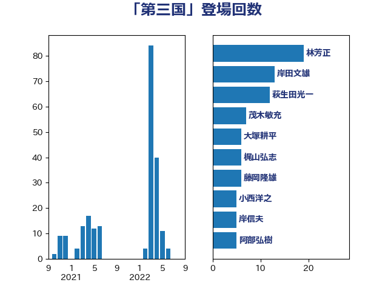

単語「第三国」

| 林芳正 | 自由民主党 | 19 回 |
| 岸田文雄 | 自由民主党 | 13 回 |
| 萩生田光一 | 自由民主党 | 12 回 |
| 茂木敏充 | 自由民主党 | 7 回 |
| 大塚耕平 | 国民民主党 | 6 回 |
| 梶山弘志 | 自由民主党 | 6 回 |
| 藤岡隆雄 | 立憲民主党 | 6 回 |
| 小西洋之 | 立憲民主党 | 5 回 |
| 岸信夫 | 自由民主党 | 5 回 |
| 阿部弘樹 | 日本維新の会 | 5 回 |
| 古川禎久 | 自由民主党 | 4 回 |
| 和田義明 | 自由民主党 | 4 回 |
| 岩渕友 | 日本共産党 | 4 回 |
| 鈴木貴子 | 自由民主党 | 4 回 |
| 吉田宣弘 | 公明党 | 3 回 |
| 河野義博 | 公明党 | 3 回 |
| 谷合正明 | 公明党 | 3 回 |
| 足立康史 | 日本維新の会 | 3 回 |
| 野上浩太郎 | 自由民主党 | 3 回 |
| 鈴木敦 | 国民民主党 | 3 回 |
| 伊波洋一 | 無所属 | 2 回 |
| 斎藤洋明 | 自由民主党 | 2 回 |
| 矢倉克夫 | 公明党 | 2 回 |
| 石井苗子 | 日本維新の会 | 2 回 |
| 笠井亮 | 日本共産党 | 2 回 |
| 細田健一 | 自由民主党 | 2 回 |
| 赤嶺政賢 | 日本共産党 | 2 回 |
| 辻清人 | 自由民主党 | 2 回 |
| 高橋光男 | 公明党 | 2 回 |
| 三浦信祐 | 公明党 | 1 回 |
| 世耕弘成 | 自由民主党 | 1 回 |
| 井上英孝 | 日本維新の会 | 1 回 |
| 伊藤俊輔 | 立憲民主党 | 1 回 |
| 佐藤正久 | 自由民主党 | 1 回 |
| 八木哲也 | 自由民主党 | 1 回 |
| 加田裕之 | 自由民主党 | 1 回 |
| 塩川鉄也 | 日本共産党 | 1 回 |
| 奥野総一郎 | 立憲民主党 | 1 回 |
| 安江伸夫 | 公明党 | 1 回 |
| 小林鷹之 | 自由民主党 | 1 回 |
| 小泉進次郎 | 自由民主党 | 1 回 |
| 小田原潔 | 自由民主党 | 1 回 |
| 有村治子 | 自由民主党 | 1 回 |
| 木原誠二 | 自由民主党 | 1 回 |
| 本田太郎 | 自由民主党 | 1 回 |
| 杉本和巳 | 日本維新の会 | 1 回 |
| 柴田巧 | 日本維新の会 | 1 回 |
| 浜野喜史 | 国民民主党 | 1 回 |
| 片山さつき | 自由民主党 | 1 回 |
| 玄葉光一郎 | 立憲民主党 | 1 回 |
| 田名部匡代 | 立憲民主党 | 1 回 |
| 田村智子 | 日本共産党 | 1 回 |
| 神谷裕 | 立憲民主党 | 1 回 |
| 福山哲郎 | 立憲民主党 | 1 回 |
| 福重隆浩 | 公明党 | 1 回 |
| 竹内真二 | 公明党 | 1 回 |
| 笹川博義 | 自由民主党 | 1 回 |
| 羽田次郎 | 立憲民主党 | 1 回 |
| 里見隆治 | 公明党 | 1 回 |
| 鷲尾英一郎 | 自由民主党 | 1 回 |
| 麻生太郎 | 自由民主党 | 1 回 |